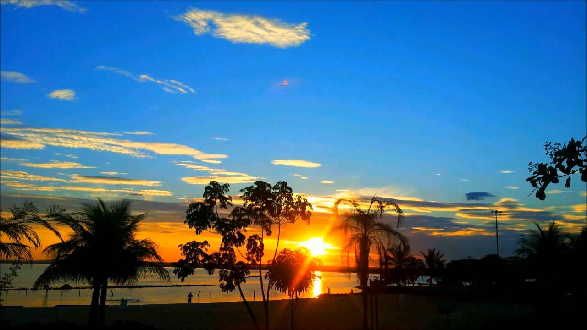
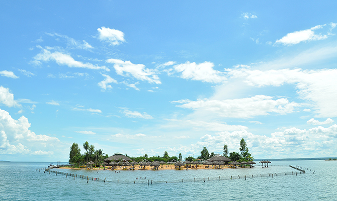
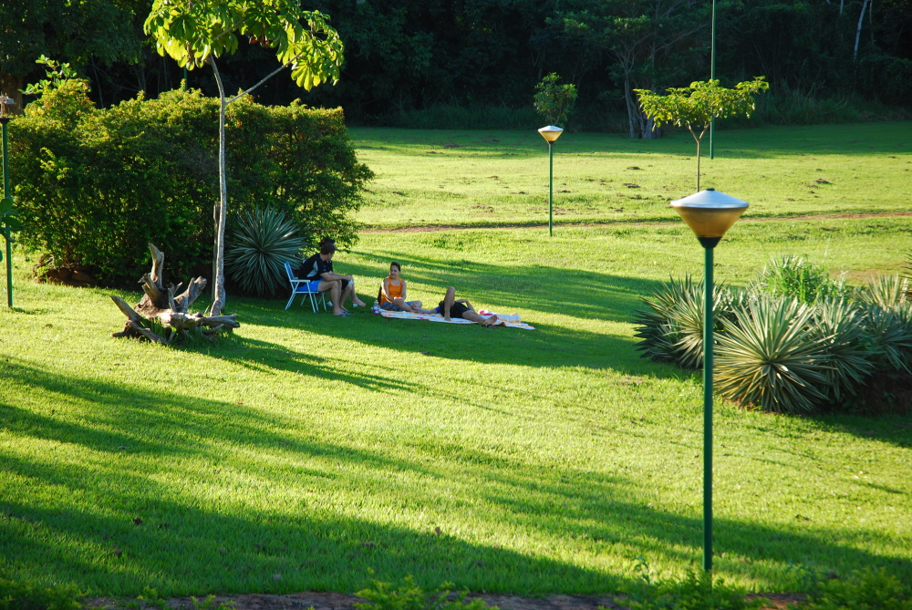
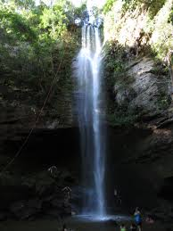
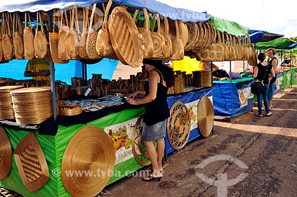
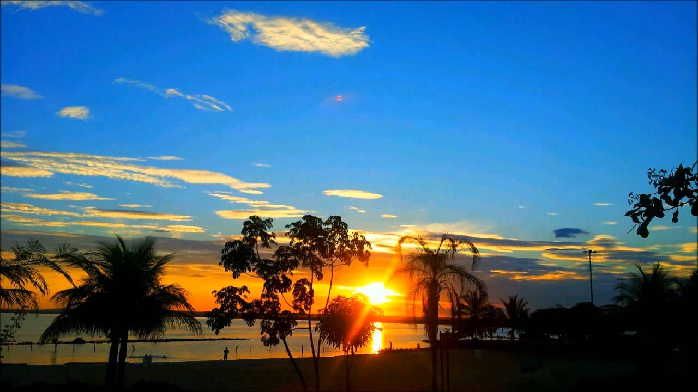
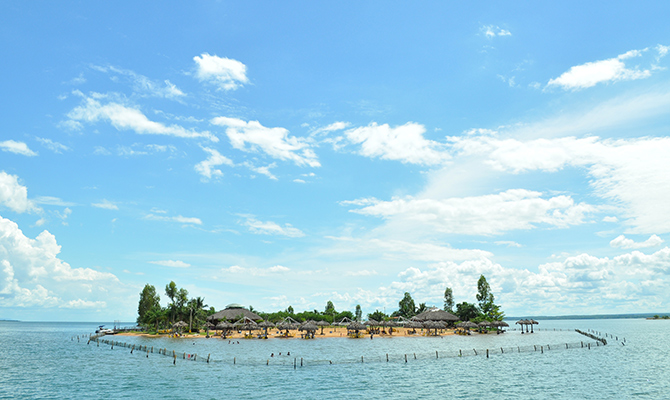
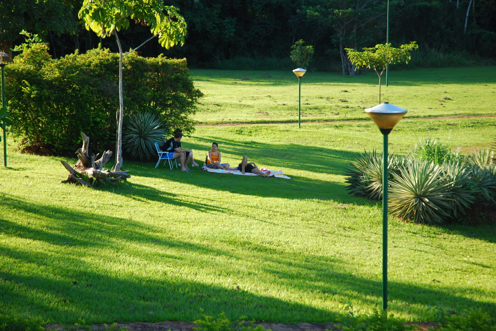
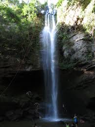
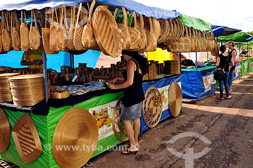

Lazer
|  |  |  |
|  |

|
 |
Imagine uma cidade planejada, em meio à exuberante paisagem do cerrado, com parques urbanos, praças imensas e áreas verdes estrategicamente projetadas. Agora, visualize isso tudo entre uma incrível serra, de um lado, e um imenso lago do outro. É este o cenário em que se apresenta a mais nova capital brasileira, no coração do País. É isso que vê quem visita Palmas, a capital do Tocantins.
As oportunidades de bons negócios tornaram a cidade um destino para muitos empresários, que buscam conhecer o potencial para investimentos nesse jovem estado. Mas é praticamente impossível resistir aos atrativos turísticos, especialmente àqueles que dizem respeito às águas, já que é uma grande oportunidade para se refrescar nas altas temperaturas registradas o ano inteiro.
Para isso, existe um imenso lago (de 630 km2) formado pela construção da Usina Hidrelétrica Luis Eduardo Magalhães, com 8 Km de largura, no qual podem são praticados diversos esportes náuticos. Somente na Capital, são 54 km de espelho d’água, onde também estão presentes, o ano inteiro, ótimas praias de águas doces.
As praias da Graciosa, do Prata, do Caju, dos Buritis, das Arnos e a Ilha Canela são praias permanentes, que contam com infraestrutura e barracas, onde o turista pode desfrutar de incríveis opções culinárias, como o tradicional tucunaré frito ou assado; além de apreciar umas das características mais marcantes da cidade: o pôr do sol incomparável, capaz de emocionar até os mais durões.
|  |  |  |
|  |
|
 |